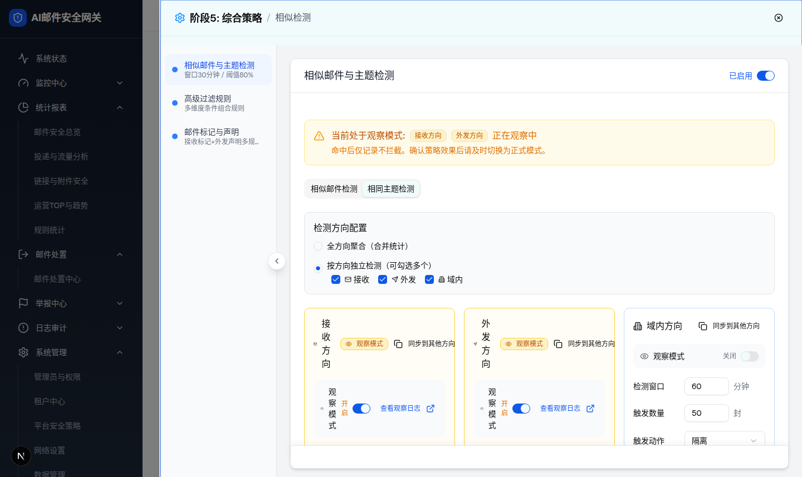
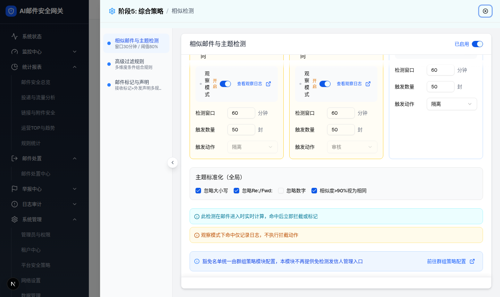

| 所属组件 | 2.3 相似检测模块 SimilarDetectionModule |
| 主文件 | index.html |
| 触发路径 | 层级0 抽屉默认态 → 点击 Tabs 中“相同主题检测”（role=tab）→ activeTab=same-subject，TabsContent 切换 |
| demo 组件 | similar-detection-module.tsx（TabsContent value="same-subject"） |
| 与层级0的差异 | ① 方向卡片使用独立的 sameSubjectConfigs 参数集（60分钟 / 50封，动作 隔离/审核/隔离）；② 卡片不渲染相似度阈值滑块（仅 similar-email Tab 有）；③ 新增“主题标准化（全局）”4 复选块；④ 新增青色/琥珀双提示条；⑤ 方向模式与方向勾选沿用与层级0共享的同一份状态。 |


| 序号 | 元素 | 实际文案/默认值 | 校验 | 交互行为 | i18n key（模块内 L.*） |
|---|---|---|---|---|---|
| 1 | 方向卡默认参数 | 接收：观察=开、60分钟、50封、隔离；外发：观察=开、60分钟、50封、审核；域内：观察=关、60分钟、50封、隔离 | 同层级0（无数字校验，差异 D-3） | 与层级0同一交互模型；无相似度阈值滑块行 | — |
| 2 | 相似度阈值 | 不渲染（activeTab === "similar-email" 条件） | — | 状态中 similarityThreshold=90 仍存在但无 UI | — |
| 3 | 主题标准化（全局） | 忽略大小写 ✓ / 忽略Re:/Fwd: ✓ / 忽略数字 ✗ / 相似度>90%视为相同 ✓ | — | Checkbox 即时切换 subjectNormalization 状态；“全局”指两 Tab/各方向共用一份 | L.subjectNormalization / ignoreCase / ignoreRePrefix / ignoreNumbers / similarSubject |
| 4 | 实时计算提示条（青色） | 此检测在邮件进入时实时计算，命中后立即拦截或标记 | — | 静态提示 | L.realtimeNote |
| 5 | 观察模式提示条（琥珀） | 观察模式下命中仅记录日志，不执行拦截动作 | — | 静态提示（恒显示，与观察开关无联动） | L.observeNote |
| 6 | 方向配置块 / 豁免条 | 与层级0完全同构（radio id 改为 aggregate-subject / split-subject） | — | directionMode 与 selectedDirections 与层级0共享同一份状态（差异 D-7） | — |
| 比对项 | demo 实际 DOM | 提取/预览 HTML | 是否一致 |
|---|---|---|---|
| Tabs 状态 | 相同主题检测 data-state=active，相似邮件检测 inactive | 相同主题检测 .active | 一致 |
| 警告条徽章 | “接收方向”“外发方向”两枚（sameSubjectConfigs 的 observe 集合） | banner 两枚徽章 | 一致 |
| 接收方向卡 | amber、switch checked、inputs [60,50]、无 slider（aria-valuenow 无）、combobox “隔离”且 disabled、节点数 47 | 预览同状态、无滑块行 | 一致 |
| 外发方向卡 | amber、switch checked、inputs [60,50]、combobox “审核”且 disabled、节点数 47 | 预览同状态 | 一致 |
| 域内方向卡 | 蓝边、switch unchecked、combobox “隔离”可用、节点数 43（config.enabled=false 仍渲染） | 预览同状态 | 一致（enabled 无 UI 已记差异 D-5） |
| 主题标准化复选 | #norm-case ✓ / #norm-prefix ✓ / #norm-numbers ✗ / #norm-similar ✓ | 预览 勾/勾/不勾/勾 | 一致 |
| 提示条 | p 文案两条：“此检测在邮件进入时实时计算…”“观察模式下命中仅记录日志…” | note.cyan / note.amber 同文案 | 一致 |
| 豁免条 | “豁免名单统一由群组策略模块配置…”存在 | 同文案 | 一致 |